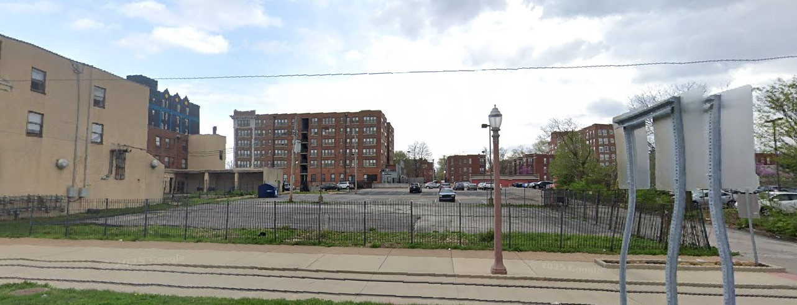

In December 1959, a young guitarist named Grant Green had recently returned to St. Louis after recording his first sessions in Chicago. According to a detailed account published by Positive Feedback, Green was at that point working in strip joints on the east side of the city, venues that paid low wages and were run, as that account put it, by owners who treated musicians as easily disposable commodities that could be swapped literally for a song. He was twenty-four years old and had not yet made a single record under his own name. Within fourteen months he would be in Rudy Van Gelder's studio recording for Blue Note Records, on his way to becoming one of the most recorded jazz guitarists in history.
But first, there was Christmas night at the Holy Barbarian.
Ollie Matheus had recently opened a small coffeehouse at 572 De Baliviere Avenue in the Skinker-DeBaliviere neighborhood of St. Louis. It was a beatnik hangout in the spirit of the era, named after Lawrence Lipton's 1959 chronicle of bohemian life on the American margins. Chess players occupied the corners. A local artist painted portraits near the stage. A poet named Pete Simpson served as emcee, grabbing the microphone between sets to deliver what listeners described as a send-up of beatnik verse.
What made the Holy Barbarian unusual, and what made it dangerous in the eyes of St. Louis authorities, was its insistence on integration. The Matheus brothers created a room that challenged St. Louis norms. Black and white musicians shared the stage. Black and white audiences shared the room. In a city where such mingling was actively discouraged, the Holy Barbarian pushed back simply by existing.
According to later accounts documented in Bob Blumenthal's liner notes for the 2012 album release, the club faced pressure from authorities and did not survive long. But not before someone turned on a tape recorder.
The group that assembled at the Holy Barbarian that week was led by organist Sam Lazar, a St. Louis native who had recently taken up the Hammond B3 after hearing Jimmy Smith. Lazar had already worked with Green and would go on to record three albums for Chess Records' Argo subsidiary between 1960 and 1962, the first of those sessions featuring Green on guitar, Chauncey Williams on drums, and blues titan Willie Dixon on bass.
On drums was Chauncey Williams, a local player whose shuffle feel carried the band with what NPR critic Kevin Whitehead later described as a Chicago blues undertow: earthy, relaxed, rhythmically rooted in the American heartland.
On tenor saxophone was Bob Graf.
Graf was the oldest member of the group and, as the liner notes to the eventual album release noted, the one with the most formal pedigree. He had played in Count Basie's small group in Chicago in 1950, recommended by trumpeter Clark Terry, who told Basie about a young Caucasian kid named Bob Graf. Basie's response, as Terry recalled in his Smithsonian oral history, was three words: "Get the kid." Graf went on to tour with Woody Herman's Third Herd, recording for Capitol Records in June 1950 and for MGM Records in January 1951. He had recorded with the Chet Baker Big Band for Pacific Jazz in 1956, and led his own quartet backing jazz vocalist Bev Kelly in St. Louis just weeks before the Holy Barbarian sessions.
He was also, as multiple reviews of the 2012 album release noted, the only white member of the group. At the Holy Barbarian, that was precisely the point. Bob Graf's presence in the band was not incidental. According to the Positive Feedback account of the sessions, his involvement was at the direct insistence of owner Ollie Matheus, who was determined to integrate the band.
The tape was rolling on December 25, 1959. A second session followed on February 20, 1960. The emcee's voice is audible on the recording, introducing the musicians by name, the crowd in the holiday spirit, the room alive with the casual energy of a local hangout where no one was performing for posterity.
Grant Green was not the leader that night. He was one of the guys in the band. What the recording captures is something rarer than a showcase. Four musicians in full flight, playing for a room that was listening, inside a club that was quietly making history.
The standards they played included "There Will Never Be Another You," "Blue Train," "Groovin' High," and "Out of Nowhere." They also played originals, including a piece called "Holy Barbarian Blues" that named the room and the moment at once.
Bob Graf plays the melody on "There Will Never Be Another You." His tone is warm and authoritative. JazzWeekly noted that Graf has "that Four Brothers sound," the high compliment of the era, invoking the legendary Herman saxophone section of Zoot Sims, Stan Getz, Herbie Steward, and Serge Chaloff. NPR's Kevin Whitehead, reviewing the album in January 2013, framed Graf as a player whose national visibility had faded, playing with the authority of someone who had earned every note.
A few months after the Holy Barbarian sessions, alto saxophonist Lou Donaldson came through St. Louis, heard Grant Green playing a session, and told Alfred Lion at Blue Note Records about him. Green moved to New York. Between 1961 and 1965, he recorded more Blue Note albums as leader and sideman than anyone else on the label. He became one of the most sampled guitarists in jazz history, his music eventually borrowed by A Tribe Called Quest, Kendrick Lamar, Cypress Hill, and Wu-Tang Clan.
Bob Graf returned to the St. Louis scene. He led a bossa nova quartet at a club called the Fallen Angel in 1963, the last mention of him in the national jazz press for nearly two decades. He repaired instruments for school districts, raised a family, and played local gigs on his own terms. The music never left him. It simply lived in smaller rooms.
The Holy Barbarian itself closed not long after the recordings were made, a casualty of the same social pressures its existence had quietly defied.
For decades the tapes sat dormant. In 2012, Uptown Records released The Holy Barbarian, St. Louis, 1959, a complete document of those sessions with liner notes by jazz critic Bob Blumenthal and photographs from the era. NPR reviewed it in January 2013. Fresh Air covered it the same month. JazzWeekly called it "another great treasure." The album is available on CD and streaming platforms. Graf appears throughout the released sessions.

The original Holy Barbarian building at 572 DeBaliviere no longer appears to survive. The address today resolves to a cleared parcel and parking area, suggesting the structure was likely demolished during later redevelopment. A site visit is planned to document whatever remains of the block.
What is certain is that on Christmas night, 1959, something real happened there. Four musicians played jazz in an integrated room in a city that did not want integrated rooms. One of them became a legend. One is remembered mostly in fragments. Two are largely unknown to history. Someone had the foresight to press record.
That tape survived. The music is still there.
Bob Graf is still there too.